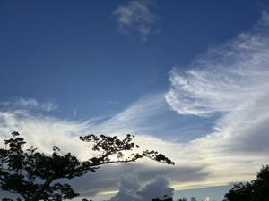

うるがいの話 ある日
最新: 可哀想な甥っ子【うるがいの話 ある日】とは 一日だけのプログです
『うるがいの話』の最新一日だけのプログで、通信料が少なく経済的だ。カニの画像をクリックすると全ての日付が載る『うるがいの話』サイトを表示します
|
|
【うるがいの話】 うるがい(ｳﾙｶﾞｲ urugai)とは、『もずくがに』の名前でとても大きくなります。 |
|---|---|
|
|
【カミマヤーの話】 猫のことを方言でマヤーといいます。カミマヤー（kamimayaa）とは、神の猫のことです。 |
|
【たながぁの音楽】 たながぁ（ﾀﾅｶﾞｰ tanagaa）とは手長えびのことで、何種類かあり大きいのは車 エビぐらいになります。 |

|
【ぶながぁの話】 ぶながぁ(ﾌﾞﾅｶﾞｰ bunagaa)とは、赤い髪の毛、赤い身体、そして身長は１ｍ２０ｃｍ ぐらい、川の蟹を食べているの目撃された。場所は沖縄県国頭郡大宜味村のと ある村僕の隣近所に住んでいる爺さんから、聞いた話です。 |
|
|
【ギーマの話】 ギーマ(giima)とは、山原の里山に咲くスズランに似た、 花を付けます。実は食べられます、 気が付くと口の周りが紫になっています。 |
2025年09月03日 (水）可哀想な甥っ子
15:53

１８時２０分、２学年年上の従兄（母親の姉の子供）の『奥さん
が亡くなった、中日に告別式がある』と兄弟で一番下のアキラか
ら、連絡を受けたと。ん－、少し面識があるな・・・悪いけど行
けないので、香典を代わりに出していてと頼む。数分後、甥っ子
に電話、香典出さなくてもいいからと伝える。甥っ子にも、面識
もない筈だから出なくてもいいよと言うと、直接電話きたから行
くよ、なぜ皆から僕に電話がかかってくるのかな・・・、役場に
居るからじゃないと答えた。彼は、バールをもって墓を開ける役
割をいつも任されるのである。
２０時４２分、従妹（母親の妹の子供）から同じ連絡があった。
ん、連絡ありがとうと応答する。しかし、浦添市に住んでいる母
親の妹の子供と、彼らはほとんど関わりはない筈だし、叔母さん
は昨年の１１月に亡くなったばかりで（彼らは、告別式に誰も来
なかった）・・。
母親の姉とは、母親と妹が多額の借金を払ってもらえず、妹夫婦
は民事訴訟もおかしたのに。そして、いろいろあった実家を処分
したあと・・・母親が仮住まいして家も母親は追い出さ・・、面
倒くさいのでお終いにする。という、ワケで。
仏壇の果物を見ていると、きのう買った筈のサトウキビが無い！
、レシートにはサトウキビがある、今日にスパーにいくとすぐに
出してくれた。